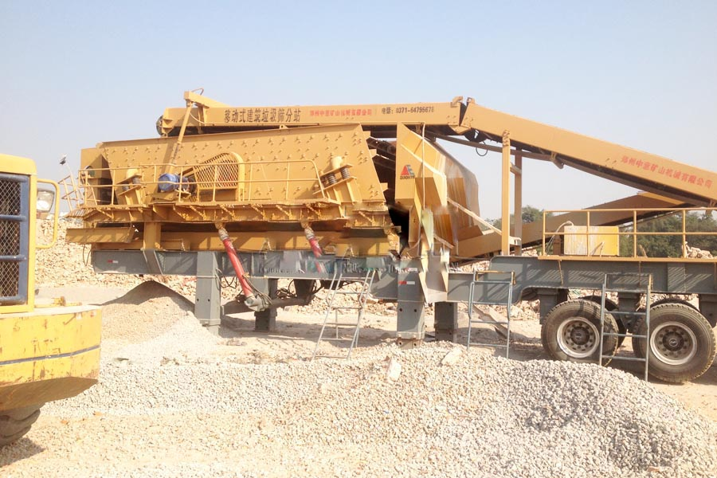

- Home >
- application case >
- construction of gyratory crusher

Construction waste crushing production line

Mobile construction waste crushing station for urban construction waste crushing.
construction of gyratory crusher
South Africa mobile construction garbage Crusher machine manufacturer prices, South Africa construction waste processing production line
Key words: construction waste, construction waste treatment equipment, construction waste processing production line
Description: CAG feeder in Zhengzhou as South Africa made 3 sets of large mobile construction waste crushing machines will soon ship equipment arrived in Jinan and Zibo, Shandong province will be resolved after siege trapped construction waste. The shipment of construction waste processing production line, to further expand the CAG Zhengzhou mining machinery sales in the domestic area.

Shanghai CAG mine machine 3 set mobile construction waste crushing machines sent to Jinan and Zibo
Recently, Shanghai CAG Mining Machinery Co., Ltd. 3 sets of large-scale mobile crushing station delivery ceremony was held in Zhengzhou City, Xingyang Province, Henan three. This large mobile crushing station is about to be sent to South Africa, which will be used to solve the problem of building garbage siege in Shandong Province, which will realize the conversion of Ji’nan and Zibo and nearby urban construction waste to recycled concrete aggregate and new type of green brick. This shipment expanded CAG mobile crushing station in Shandong market influence, to further expand the Shanghai CAG mining machine in the field of domestic sales.
To meet the Shandong market and customer demand, Shanghai CAG Mining Machinery Co., Ltd. for its 3 sets of large output mobile crushing station, the 3 sets of equipment not only received a line of experts and customers highly recognized, its mature technology is more in the domestic and international construction waste resource successful cases have been verified in the field. The equipment under the premise of maintaining, broken and environmental performance is the industry must, in the similar equipment with strong competitiveness. CAG mobile crushing screening station beautiful appearance, economical and practical, high safety coefficient, energy saving and environmental protection, diversification of the configuration, can meet the construction waste disposal and sand stone crushing sand a variety of material processing.
CAG mineral building waste processing machinery description
Construction waste is a metabolite of urban development and social development must be as long as construction waste is produced, due to people’s lack of awareness about construction waste, so is treated as waste, but with the expansion of knowledge and scientific and technological progress, we find no spam in the world, only the misplaced treasures. Crushing and screening after disposing of construction waste as long as reasonable is the high grade concrete raw materials and brick raw material. Domestic well-known manufacturer of mobile Crusher CAG mining machinery company based on years of experience in research and development, for building waste now, based on the old equipment after several tests to improve, the launch of the mobile crushing plant for construction waste recycling of aggregates offers the perfect solution, is the most advanced construction waste disposal equipment currently on the market.
Following CAG mineral building waste breaking machine case
(1) introduction of Zhengzhou, Henan Kaifeng CAG mineral YPS260-construction waste crushing machines, built 2000 Nissan tons construction waste disposal plant
(2) Shanghai CAG mining machine-building waste breaking machines debut in Hangzhou, Zhejiang construction waste processing production line
(3) XI recycling co, Ltd successful introduction of Shanghai CAG portable construction waste crushing machines
Leave Me A Message, Now
If you have any questions regarding equipment prices, production line configuration or other problems, you can send a message to us, we will contact you soon.